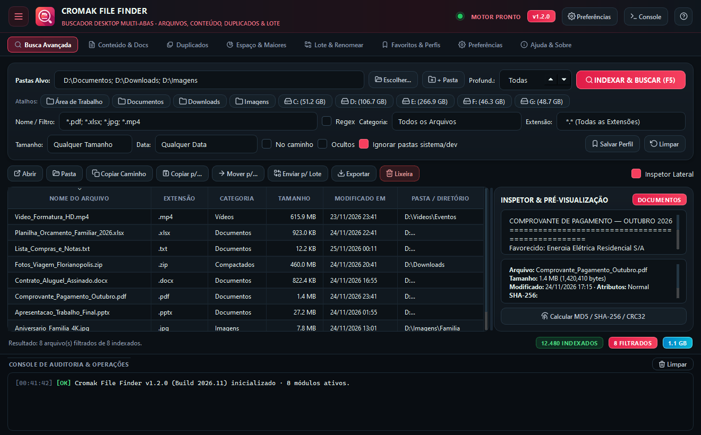
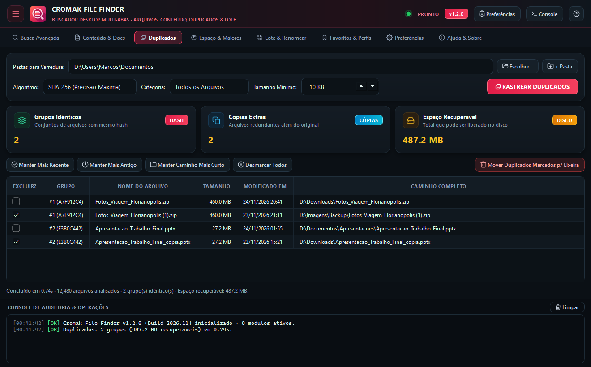
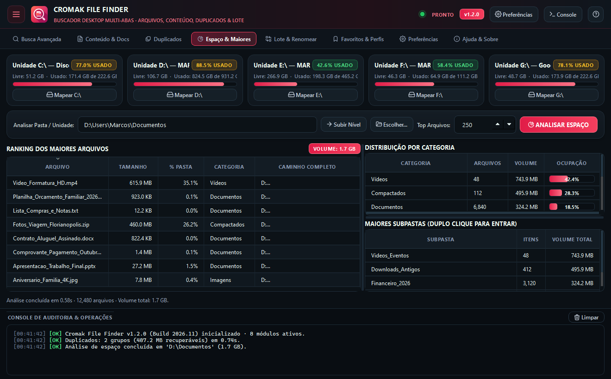
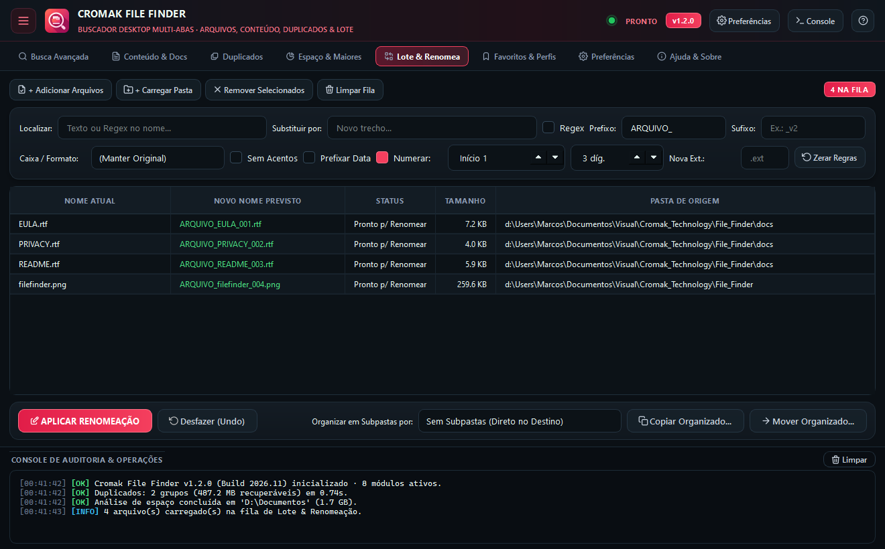
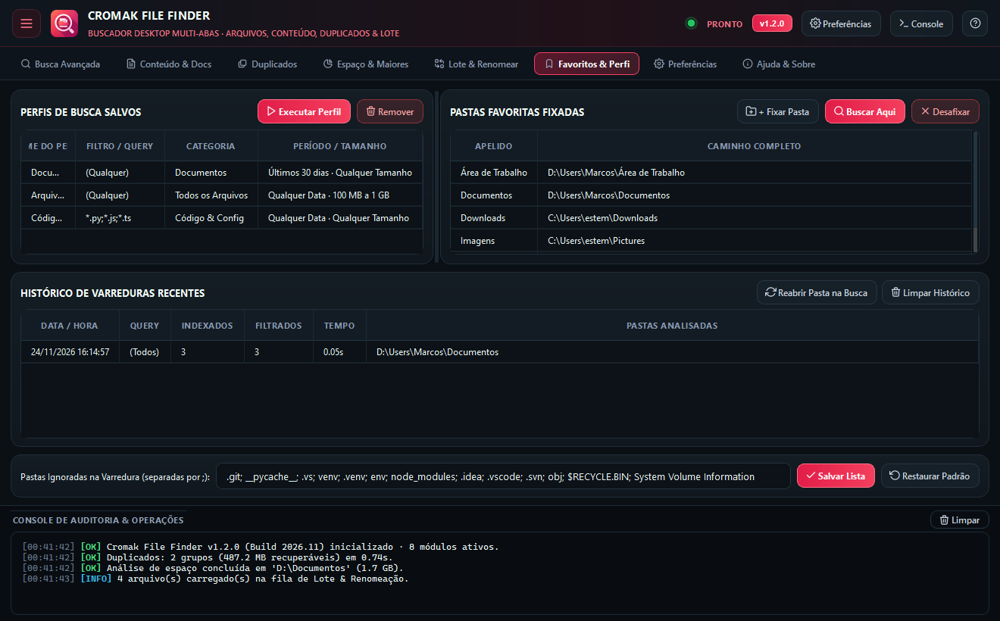

Cromak File Finder
Localização Instantânea, Busca em Conteúdo, Caçador de Duplicados & Gestão em Lote
Estação desktop de alta velocidade construída em PyQt6 Dark Premium com 8 módulos integrados. Varra múltiplos discos simultaneamente, encontre palavras escondidas dentro de PDFs, Word (.docx), Excel (.xlsx) e códigos-fonte, recupere gigabytes eliminando duplicados reais por hash e renomeie centenas de arquivos com prévia ao vivo e Undo.
Versão: 1.2.0 (Build: 2026.11) • Arquitetura 64-bits Nativa • 3 Temas Visuais (Rosa Coral, Esmeralda & Ciano)

8 Módulos de Produtividade em uma Única Estação
Projetado para substituir buscas lentas do sistema e reunir auditoria, limpeza e organização em abas instantâneas.
Indexação Multi-Pastas & Regex
Varra múltiplos diretórios e discos simultaneamente via os.scandir assíncrono, filtrando em tempo real por curingas (*.pdf;*.xlsx), Regex, faixa customizada em MB e datas.
Busca Interna em PDF, Word e Excel
Encontre cláusulas, CPFs, chaves ou trechos de código dentro de PDFs, Word (.docx), Excel (.xlsx), JSON, XML e scripts com indicação da linha exata e destaque visual.
Caçador de Duplicados em 3 Estágios
Compara tamanho exato, pré-assinatura rápida de 4 KB e hash completo SHA-256 / MD5, com seleção automática para manter o arquivo mais recente ou mais antigo.
Radiografia de Espaço & Discos
Visualize o uso real de todas as unidades montadas, descubra os maiores arquivos do PC, a ocupação percentual por categoria e navegue pelas subpastas mais pesadas.
Renomeação & Organização em Lote
Prévia Antes → Depois ao vivo com Localizar/Substituir, Regex, numeração sequencial, remoção de acentos, botão Desfazer (Undo) e separação automática em subpastas.
Inspetor Lateral & Exportação Rica
Inspecione miniaturas de imagens, textos e hashes CRC32 / MD5 / SHA-256 sem sair da tabela e exporte inventários completos em CSV, HTML estilizado ou JSON.
Encontre em Segundos o que o Windows Leva Minutos
Chega de esperar barras verdes infinitas no Explorer ou instalar indexadores pesados que consomem memória em segundo plano o dia inteiro. O Cromak File Finder v1.2.0 opera sob demanda com threads dedicadas e total privacidade local:
Comparativo Direto
Compare tudo o que o Cromak File Finder v1.2.0 entrega em um único aplicativo frente à busca comum do Windows e ferramentas avulsas.
| Recursos & Capacidades | Busca do Windows Explorer | Buscadores Comuns | Cromak File Finder v1.2.0 |
|---|---|---|---|
| Múltiplas Pastas Simultâneas & Regex | Apenas 1 pasta por vez, sem Regex | Apenas filtro por nome básico | Multi-Pastas + Curingas + Regex Instantâneo |
| Busca Interna em PDF, DOCX e XLSX | Depende de iFilters lentos e não mostra linha | Somente arquivos .txt puros | Extração Nativa com Linha Exata e Grifo |
| Caçador de Duplicados por Hash | Inexistente | Exige comprar outro software separado | Integrado em 3 Estágios (SHA-256 / MD5) |
| Análise de Espaço & Renomeação em Lote | Apenas numeração simples (1), (2) | Sem organizador de pastas ou Undo | Radiografia de Disco + Lote com Prévia e Undo |
| Relatórios & Custo Vitalício | Sem exportação de lista de arquivos | Assinaturas anuais de US$ 29 a US$ 49 | CSV / HTML / JSON · Vitalício por US$ 9,99 |
Visão Geral das Abas
Clique em qualquer captura para ampliar em alta definição e explorar cada módulo do Cromak File Finder.
Busca Avançada & Inspetor ao Vivo
Atalhos rápidos para discos locais, múltiplos filtros combinados, prévia documental/imagem e cálculo instantâneo de hashes.

Busca em Conteúdo (PDF, DOCX & XLSX)
Localize termos exatos ou Regex dentro de documentos e códigos-fonte com visualização imediata das linhas destacadas.

Caçador Inteligente de Duplicados
KPIs de espaço recuperável e marcação em 1 clique para preservar o arquivo mais recente, mais antigo ou de menor caminho.

Análise de Espaço & Maiores Pastas
Painéis de saúde dos discos locais, ranking dos arquivos mais pesados e distribuição percentual por categoria.

Renomeação em Lote & Undo
Veja o novo nome previsto antes de aplicar, previna conflitos automaticamente e organize arquivos em subpastas por Categoria ou Ano-Mês.

Perfis Salvos, Favoritos & Histórico
Execute perfis recorrentes com um clique, fixe diretórios estratégicos e gerencie pastas ignoradas na varredura.
Engenharia Multi-Thread PyQt6
-
Varredura Iterativa via Win32 FindFirstFile (os.scandir)
Lê tamanho, carimbos de data e atributos ocultos diretamente da entrada de diretório sem chamadas redundantes de sistema, alcançando dezenas de milhares de arquivos por segundo.
-
Desduplicação em 3 Estágios (Tamanho → 4 KB → SHA-256)
Descarta arquivos únicos instantaneamente através de assinatura parcial
BLAKE2bde bordas antes de executar o hash criptográfico completo, poupando leitura em SSDs e HDDs. -
Integração Nativa Shell32 & Persistência Isolada
Envio nativo para a Lixeira do Windows via
SHFileOperationWe configurações salvas localmente em%APPDATA%\Cromak Technology\File Finder.
Privacidade Absoluta & Sigilo Documental
Toda a indexação e leitura de documentos ocorre 100% offline na sua máquina. Nenhum nome de arquivo, trecho de contrato ou hash é transmitido para servidores externos.

Licenciamento Simples e Acessível
Teste gratuitamente por 40 dias com todas as 8 abas liberadas ou garanta sua licença vitalícia por apenas US$ 9,99.
Avaliação Gratuita (40 Dias)
- Todas as 8 abas desbloqueadas para avaliação
- Busca Avançada + Leitura PDF / Word / Excel
- Caçador de Duplicados SHA-256 & Análise de Espaço
- Renomeação e Organização em Lote com Undo
- 3 Temas Dark Premium integrados
- Exibe aviso de avaliação ao iniciar
- Uso contínuo e comercial requer licença PRO após o trial
Licença Vitalícia PRO
- Licença Vitalícia Perpétua (Pagamento Único)
- Zero Avisos de Avaliação ou Mensalidades
- Uso Pessoal, Corporativo e Comercial Liberado
- Exportação ilimitada de relatórios CSV, HTML e JSON
- Todos os 8 módulos em velocidade máxima
- Atualizações gratuitas da série 1.x
- Suporte oficial prioritário Cromak Technology
Ativação rápida e vitalícia direto com nosso suporte oficial
Licença vitalícia sem assinatura recorrente · Windows 10 e Windows 11 (64-bits).
Perguntas Frequentes (FAQ)
Posso pesquisar em vários discos ou pastas diferentes de uma só vez?
Sim! Basta usar o botão + Pasta ou separar os diretórios com ponto e vírgula (ex.: C:\Documentos; D:\Projetos; E:\Backups) para indexar e filtrar todos eles em uma única tabela unificada.
Como funciona a busca dentro de PDFs, Word e Excel?
Na aba Conteúdo & Docs, o Cromak File Finder lê diretamente a camada textual de arquivos .pdf, .docx, .xlsx e dezenas de formatos de código/texto sem precisar ter o Microsoft Office ou Adobe Reader instalados, destacando em amarelo cada linha onde o termo aparece.
E se eu renomear um lote de arquivos e quiser voltar atrás?
Além da tabela de prévia ao vivo que mostra exatamente como cada nome ficará antes de aplicar (bloqueando colisões de nomes automaticamente), a aba Lote & Renomear possui o botão Desfazer (Undo) para reverter toda a operação aos nomes originais em um clique.
A licença de US$ 9,99 cobra mensalidade ou anuidade?
Não! O valor de US$ 9,99 é um pagamento único para licença vitalícia perpétua, incluindo uso pessoal e comercial sem cobranças recorrentes.